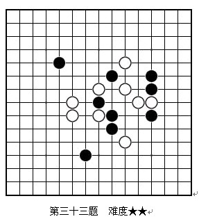
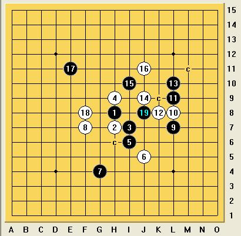

高级VCT题，请各路高手目算回答
#1 高级VCT题，请各路高手目算回答 作者：快乐天羽 发表时间：2008-12-23 13:33:39
此题目个人觉得超难。请各位高手算算。1个小时算不出来的，你可以动用软件算，又一个小时，还没算出来的。你就告别五子棋吧。哈哈
=======上图对应的爱五子棋谱代码如下，以便你拆解：========
h8h7i7h9i6j5g4f7l7l8l9k8l10j9i10j11e11f8
======================================================
#2 Re:高级VCT题，请各路高手目算回答 作者：萧寒寒 发表时间：2008-12-23 14:04:55
 老师出错了吧？
老师出错了吧？=======上图对应的爱五子棋谱代码如下，以便你拆解：========
h8h7i7h9i6j5g5f7l7l8l9k8l10j9i10j11e11f8h6f4g9f10j6
======================================================
#3 Re:高级VCT题，请各路高手目算回答 作者：yoda 发表时间：2008-12-23 14:08:09
题目有误？？#4 Re:高级VCT题，请各路高手目算回答 作者：无尽 发表时间：2008-12-23 14:12:23
应该出错了，是不是天狗里的题目？看着眼熟。
黑石和Solver都杀不出，后来好像小4改进了下，Solver能杀了。
［ 快乐天羽 于 2008-12-23 14:39:29 时奖励此帖[金币加 20 威望加1］
#5 Re:高级VCT题，请各路高手目算回答 作者：思无邪 发表时间：2008-12-23 14:14:25
哪里可以找到VCT题啊天羽老师#6 Re:高级VCT题，请各路高手目算回答 作者：行云流水 发表时间：2008-12-23 14:14:50
是呀。这题目，恐怕是有误，否则就是5秒的事情了。
［ 快乐天羽 于 2008-12-23 14:39:52 时奖励此帖[金币加 20 威望加1］
#7 Re:高级VCT题，请各路高手目算回答 作者：yoda 发表时间：2008-12-23 14:14:54
看着眼熟，查了查是天狗道场的问题。

［ 快乐天羽 于 2008-12-23 14:40:21 时奖励此帖[金币加 20 威望加1］
#8 Re:高级VCT题，请各路高手目算回答 作者：无尽 发表时间：2008-12-23 14:21:17
难度才两颗星？ 星越少越难？ 120题版的天狗以前Solver有4题杀不出，我认为这题最难了。我一年多前做过，目算杀不出
星越少越难？ 120题版的天狗以前Solver有4题杀不出，我认为这题最难了。我一年多前做过，目算杀不出
#9 Re:Re:高级VCT题，请各路高手目算回答 作者：yoda 发表时间：2008-12-23 14:36:37
引用：星越多越难，最高3星。当然是我个人做了一遍后分的难度，我赛前经常做天狗恢复算力。我给戈翀宇出这道天狗，他目算很快就解出来了。
原文由 无尽 发表于 2008-12-23 14:21:17 :难度才两颗星？
#10 Re:高级VCT题，请各路高手目算回答 作者：快乐天羽 发表时间：2008-12-23 14:36:54
更正，这个太简单了。搞错了个点。=======上图对应的爱五子棋谱代码如下，以便你拆解：========
h8h7i7h9i6j5g4f7l7l8l9k8l10j9i10j11e11f8
======================================================
#11 Re:高级VCT题，请各路高手目算回答 作者：潇洒 发表时间：2008-12-23 14:41:48
yoda 是哪位老师？#12 Re:Re:Re:高级VCT题，请各路高手目算回答 作者：无尽 发表时间：2008-12-23 14:43:13
引用：
原文由 yoda 发表于 2008-12-23 14:36:37 :引用：星越多越难，最高3星。当然是我个人做了一遍后分的难度，我赛前经常做天狗恢复算力。我给戈翀宇出这道天狗，他目算很快就解出来了。
原文由 无尽 发表于 2008-12-23 14:21:17 :难度才两颗星？
牛人！
我也做过，这是印象中最难的一题。
#13 Re:高级VCT题，请各路高手目算回答 作者：海月 发表时间：2008-12-23 16:25:47
［ 快乐天羽 于 2008-12-23 17:35:56 时奖励此帖[金币加 20 威望加1］
#14 Re:高级VCT题，请各路高手目算回答 作者：海月 发表时间：2008-12-23 16:32:44
代码发出来好慢啊,这题难度一般啊#15 Re:高级VCT题，请各路高手目算回答 作者：快乐天羽 发表时间：2008-12-23 17:36:48
海月是自己目测的吗？牛人。#16 Re:高级VCT题，请各路高手目算回答 作者：行云流水 发表时间：2008-12-23 17:49:24
目测结束，扣除应付领导，30分钟。#17 Re:高级VCT题，请各路高手目算回答 作者：流逝 发表时间：2008-12-23 17:56:24
貌似很简单啊 我看了5分钟就。。。#18 Re:高级VCT题，请各路高手目算回答 作者：快乐天羽 发表时间：2008-12-23 18:08:41
流逝你有点吹牛吧。这个题，别说你目测5分钟。就是拿全套工具，你50分钟做出来就不错了。
#19 Re:高级VCT题，请各路高手目算回答 作者：逆刃 发表时间：2008-12-23 18:14:07
不知道出题人是怎么出出来的，这么牛X！#20 Re:高级VCT题，请各路高手目算回答 作者：无尽 发表时间：2008-12-23 18:35:09
看法和楼下差不多 我对这题的印象也停留在一年多前
我对这题的印象也停留在一年多前
#21 Re:高级VCT题，请各路高手目算回答 作者：快乐天羽 发表时间：2008-12-23 18:43:39
这个题算难的，而且终结者是直接扫不出来的。当然我是说2年前的终结者，当时我是用工具拆出来的，开始也以为题目有问题，就没做了，第2次看天狗题时，就又用工具拆了下，还好，不是很费事。就把这个答案单独存了份。今天翻看天狗，就把这个题放这里。个人觉得，这个题如果能目测出来，属于实战高手了。即使用工具算出来，也是很不错的。#22 Re:高级VCT题，请各路高手目算回答 作者：卖身打胎 发表时间：2008-12-25 1:33:44
看了10分钟都还没把局面看清楚
#23 Re:Re:高级VCT题，请各路高手目算回答 作者：萨塔 发表时间：2009-2-1 16:27:23
引用：
原文由 萧寒寒 发表于 2008-12-23 14:04:55 :
=======上图对应的爱五子棋谱代码如下，以便你拆解：========
h8h7i7h9i6j5g5f7l7l8l9k8l10j9i10j11e11f8h6f4g9f10j6
======================================================
题没出错，是你打谱时出错了
#24 Re:高级VCT题，请各路高手目算回答 作者：张三疯 发表时间：2009-2-1 19:14:41
我做不出来,#25 Re:高级VCT题，请各路高手目算回答 作者：星期一 发表时间：2009-2-2 23:33:45
j8 h7
#26 Re:高级VCT题，请各路高手目算回答 作者：屠羊说 发表时间：2009-2-3 0:37:00
=======上图对应的爱五子棋谱代码如下，以便你拆解：========
h8h7i7h9i6j5g4f7l7l8l9k8l10j9i10j11e11f8j8h6k10j10k7j12j13l6m7j7m10m11i9i8o10n10n7o7m8o6k6n9g9f10k5j6k4k3m6
======================================================
#27 Re:高级VCT题，请各路高手目算回答 作者：阿歌 发表时间：2009-2-4 15:28:32
做不出来，还没哪水平。
#28 Re:高级VCT题，请各路高手目算回答 作者：千羽鹤 发表时间：2009-2-7 16:35:56
目测实在没那个实力#29 Re:高级VCT题，请各路高手目算回答 作者：wd1988 发表时间：2009-2-8 11:52:43
2009年2月8日看到此文章，觉得很神奇，打开本人的正版终结者进行计算，并且使用秒表计时，时间为0.02.26秒。看了下，似乎是正解，为本人的正版喝彩！（地毯是后做的，花了不到1秒就打出来了，当然是无后续剪枝的）
#30 Re:高级VCT题，请各路高手目算回答 作者：玲珑玉致 发表时间：2009-2-25 19:06:34
天猪，你咋没事就出来忽悠人呢。瞧把这些人忽悠的哎，罪过罪过。#31 Re:高级VCT题，请各路高手目算回答 作者：越狱行辕 发表时间：2009-3-5 23:12:11
=======上图对应的爱五子棋谱代码如下，以便你拆解：========
h8h7i7h9i6j5g4f7l7l8l9k8l10j9i10j11e11f8j8h6k10j10k7l6m7j7m10m8l11
======================================================
#32 Re:高级VCT题，请各路高手目算回答 作者：越狱行辕 发表时间：2009-3-5 23:22:42
 有没有奖励啊
有没有奖励啊
#33 Re:高级VCT题，请各路高手目算回答 作者：越狱行辕 发表时间：2009-3-6 15:03:28
=======上图对应的爱五子棋谱代码如下，以便你拆解：========
h8h7i7h9i6j5g4f7l7l8l9k8l10j9i10j11e11f8j8k9l6
======================================================
#34 Re:高级VCT题，请各路高手目算回答 作者：剑魔令狐冲 发表时间：2009-3-13 2:25:16
这个29确实 下的我出不得声了~~~~~~~~~~~~~~~~~~~~~~~~~~
#35 Re:高级VCT题，请各路高手目算回答 作者：剑魔令狐冲 发表时间：2009-3-13 2:37:47
这道题目 可以说给 用黑石算杀的我 敲了狠狠一下
#36 Re:高级VCT题，请各路高手目算回答 作者：湖北高飞 发表时间：2009-3-30 0:15:18
用人脑算才有用处的
#37 Re:高级VCT题，请各路高手目算回答 作者：岑小鱼 发表时间：2009-9-16 13:28:55
汗 做天狗的时候有几题目没做出来 然后用黑石3.7绿色版看了下也没直接的杀还以为题目错了
刚好看到这个帖子确认了题目没错 再仔细的想 终于想出来了 不容易....
#38 Re:高级VCT题，请各路高手目算回答 作者：岑小鱼 发表时间：2009-9-30 22:52:40
再做了一次 发现还有另外一个取胜方式
#39 Re:高级VCT题，请各路高手目算回答 作者：九九 发表时间：2009-10-5 16:35:11
=======上图对应的爱五子棋谱代码如下，以便你拆解：========
h8h7i7h9i6j5g4f7l7l8l9k7l10j9i10j11e11f8f6i9g9f10j6k5h6g6j8k9i4i5f4g5h5
======================================================
#40 Re:Re:高级VCT题，请各路高手目算回答 作者：海湾浪琴 发表时间：2011-1-30 20:31:31
引用：
原文由 九九 发表于 2009-10-5 16:35:11 :
=======上图对应的爱五子棋谱代码如下，以便你拆解：========
h8h7i7h9i6j5g4f7l7l8l9k7l10j9i10j11e11f8f6i9g9f10j6k5h6g6j8k9i4i5f4g5h5
======================================================
白K6 k3一冲，就活四了